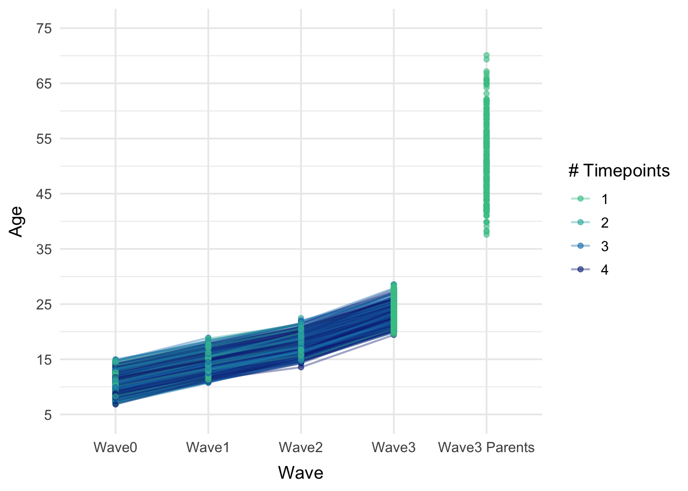
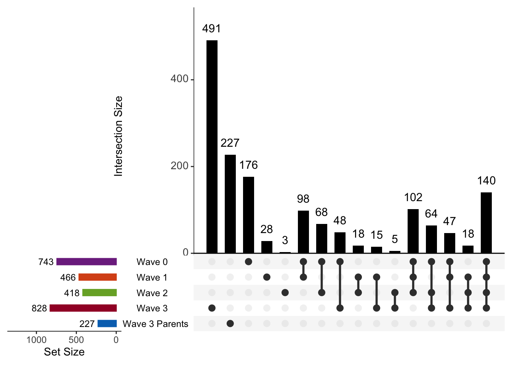

10 BHRC Neuroimaging Data
Author: Lucas Toshio Ito - UNIFESP
lucas.toshio.ito@gmail.com
lucas.toshio@unifesp.br
Last updated: March 16, 2026
This Neuroimaging Database includes magnetic resonance imaging (MRI) scans collected as part of the Brazilian High-Risk Cohort for Mental Health Conditions (BHRC), a longitudinal population-based study designed to track psychiatric and neurodevelopmental trajectories from childhood through early adulthood. Imaging data were acquired across multiple waves and sites, with multimodal acquisitions encompassing structural, functional, and diffusion MRI.
Neuroimaging assessments were conducted across four waves of data collection:
| Wave | Years | Modalities |
|---|---|---|
| Wave 0: Baseline | 2010–2012 | T1w, DWI, MTS, rs-fMRI |
| Wave 1: ~4-year follow-up | 2014–2016 | T1w, DWI, MTS, rs-fMRI |
| Wave 2: ~8-year follow-up | 2018–2020 | T1w, FLAIR, DWI, rs-fMRI |
| Wave 3: ~15-year follow-up | 2023–2025 | T1w, T2w, rs-fMRI, task-fMRI (PEER, Movies), fmap |
During Waves 0–2, only a subset of the cohort was invited to undergo neuroimaging assessments. In Wave 3, imaging scanners were improved, with a new optimized protocol, and all available probands were invited to participate along with their parents.
10.1 Sample Characteristics
The Overall column reflects the number of unique participants from each wave who contributed to the full imaging sample (N = 1317).
Code
subjectid_all_newid <- readRDS("./data/Lucas_Keep2511_BHRCS_ALL_newid.rds")
keep_ni <- readRDS("./data/Lucas_KeepNI_BHRCS.rds")
dawba_new <- readRDS("./data/Ito_249BHRC_2026_01_15.rds")
dawba_new <- inner_join(subjectid_all_newid[,c("subjectid", "ext_genid")], dawba_new, by="ext_genid")
dawba_all <- dawba_new[,c("subjectid", "redcap_event_name", grep("^dc|^p_colb", colnames(dawba_new), ignore.case = T, value = T))]
dawba_all$dcanyanx_pgc <- if_else(dawba_all$dcpanic==2 | dawba_all$dcagor==2 | dawba_all$dcgena==2 | dawba_all$dcsoph==2 | dawba_all$dcspph==2, 2, 0)
dawba_all$dceat <- as.numeric(dawba_all$dceat)
dawba_all$colb_si <- if_else(dawba_all$p_colbi1_lt==1 | dawba_all$p_colbi2_lt==1, 2, 0)
dawba_all$colb_sa <- if_else(dawba_all$p_colbsb1a_lt==1 | dawba_all$p_colbsb2a_lt==1 | dawba_all$p_colbsb3a_lt==1, 2, 0)
final_dawba <- dawba_all # %>% mutate_if(is.numeric, factor)
dawba_w0 <- final_dawba[final_dawba$redcap_event_name=="wave0_arm_1" & complete.cases(final_dawba$redcap_event_name),-2]
dawba_w1 <- final_dawba[final_dawba$redcap_event_name=="wave1_arm_1" & complete.cases(final_dawba$redcap_event_name),-2]
dawba_w2 <- final_dawba[final_dawba$redcap_event_name=="wave2_arm_1" & complete.cases(final_dawba$redcap_event_name),-2]
dawba_w3 <- final_dawba[final_dawba$redcap_event_name=="wave3_arm_1" & complete.cases(final_dawba$redcap_event_name),-2]
# dawba
colnames(dawba_w0)[-1] <- paste("w0", colnames(dawba_w0)[-1], sep = "_")
colnames(dawba_w1)[-1] <- paste("w1", colnames(dawba_w1)[-1], sep = "_")
colnames(dawba_w2)[-1] <- paste("w2", colnames(dawba_w2)[-1], sep = "_")
colnames(dawba_w3)[-1] <- paste("w3", colnames(dawba_w3)[-1], sep = "_")
keep_ni$NI_lifetime <- as.integer(rowSums(keep_ni[, c("NI_w0", "NI_w1", "NI_w2", "NI_w3")]) > 0)
keep_ni_w0 <- data.frame(subjectid = keep_ni$subjectid[keep_ni$NI_w0 == 1])
keep_ni_w1 <- data.frame(subjectid = keep_ni$subjectid[keep_ni$NI_w1 == 1])
keep_ni_w2 <- data.frame(subjectid = keep_ni$subjectid[keep_ni$NI_w2 == 1])
keep_ni_w3 <- data.frame(subjectid = keep_ni$subjectid[keep_ni$NI_w3 == 1])
keep_ni_lifetime <- keep_ni
junto_w0 <- join_all(list(keep_ni_w0, dawba_w0, dawba_w1, dawba_w2, dawba_w3),by = "subjectid", type="inner")
junto_w1 <- join_all(list(keep_ni_w1, dawba_w0, dawba_w1, dawba_w2, dawba_w3),by = "subjectid", type="inner")
junto_w2 <- join_all(list(keep_ni_w2, dawba_w0, dawba_w1, dawba_w2, dawba_w3),by = "subjectid", type="inner")
junto_w3 <- join_all(list(keep_ni_w3, dawba_w0, dawba_w1, dawba_w2, dawba_w3),by = "subjectid", type="inner")
junto_lifetime <- join_all(list(keep_ni_lifetime, dawba_w0, dawba_w1, dawba_w2, dawba_w3),by = "subjectid", type="inner")
demo <- readRDS("./data/Ito_249BHRC_2026_01_15.rds")
demo <- inner_join(subjectid_all_newid[,c("subjectid", "ext_genid")], demo, by="ext_genid")
# handedness and site
neuroimaging_bids <- read_tsv("./data/participants_subjectid.tsv") %>%
mutate(subjectid=participant_id,
redcap_event_name=factor(session_id, labels=c("wave0_arm_1", "wave1_arm_1", "wave2_arm_1", "wave3_arm_1")))
colnames(neuroimaging_bids)[10] <- "local"
neuroimaging_bids <- neuroimaging_bids[,c("subjectid", "redcap_event_name", "handedness", "local")]
demo <- left_join(demo, neuroimaging_bids, by=c("subjectid", "redcap_event_name"))
age_vars <- c("age", "page1", "page2", "nage", "fage", "p1dawbaage", "sdawbaage", "bage")
demo$max_age <- do.call(pmax, c(demo[age_vars], na.rm = TRUE))
keep_vars <- c("subjectid", "redcap_event_name", "site", "gender", "selection", "max_age", "skincolor", "handedness", "local")
demo_new <- demo[,keep_vars]
ages_w0 <- demo_new[demo_new$redcap_event_name=="wave0_arm_1",c("subjectid", "max_age")]
colnames(ages_w0)[2] <- "w0_max_age"
ages_w1 <- demo_new[demo_new$redcap_event_name=="wave1_arm_1",c("subjectid", "max_age")]
colnames(ages_w1)[2] <- "w1_max_age"
ages_w2 <- demo_new[demo_new$redcap_event_name=="wave2_arm_1",c("subjectid", "max_age")]
colnames(ages_w2)[2] <- "w2_max_age"
ages_w3 <- demo_new[demo_new$redcap_event_name=="wave3_arm_1",]
demo_overall <- join_all(list(ages_w3, ages_w0, ages_w1, ages_w2),by = "subjectid", type="full")
ages_max <- c("w0_max_age", "w1_max_age", "w2_max_age", "max_age")
demo_overall$max_age <- do.call(pmax, c(demo_overall[ages_max], na.rm = TRUE))
demo_overall$redcap_event_name <- "Overall"
demo_overall <- demo_overall[,-c(10:12)]
demo_new <- rbind(demo_new, demo_overall)
demo_format <- demo_new %>%
mutate(wave=factor(redcap_event_name, levels = c("wave0_arm_1", "wave1_arm_1", "wave2_arm_1", "wave3_arm_1", "Overall"), labels=c("Wave0", "Wave1", "Wave2", "Wave3", "Overall")),
state=factor(site, labels=c("RS", "SP")),
gender=factor(gender, labels=c("Male", "Female")),
selection=factor(selection, labels=c("Random", "High Risk")),
skincolor=factor(skincolor, labels=c("White", "Black", "Between white and black (brown)", "Indigenous", "Asian")),
handedness=factor(handedness, levels = c("Ambidextrous", "Left", "Right"), labels=c("Ambidextrous", "Left", "Right")),
site=factor(local, levels=c("EINSTEIN", "HCPA", "HDVS", "INRAD", "INSCER"))
)
keep_ni_w0$wave <- "Wave0"
keep_ni_w1$wave <- "Wave1"
keep_ni_w2$wave <- "Wave2"
keep_ni_w3$wave <- "Wave3"
keep_ni_overall <- data.frame(subjectid = keep_ni$subjectid[keep_ni$NI_lifetime==1])
keep_ni_overall$wave <- "Overall"
keep_ni_filter <- rbindlist(list(keep_ni_w0, keep_ni_w1, keep_ni_w2, keep_ni_w3, keep_ni_overall))
keep_ni_filter$new_id <- paste(keep_ni_filter$subjectid, keep_ni_filter$wave, sep="_")
demo_format$new_id <- paste(demo_format$subjectid, demo_format$wave, sep="_")
demo_format <- inner_join(keep_ni_filter[,"new_id"], demo_format, by="new_id")
tbl <- demo_format %>%
select(wave, gender, max_age, site, state, handedness, selection, skincolor) %>%
tbl_summary(
by = wave,
statistic = list(
max_age ~ c("{mean} ({sd})", "{median} ({p25}-{p75})"),
all_categorical() ~ "{n} ({p}%)"
),
digits = list(all_continuous() ~ 1,
all_categorical() ~ c(0,1)),
missing = "no",
label = list(
max_age ~ "Age",
gender ~ "Sex at birth",
selection ~ "Selection",
state ~ "State",
site ~ "Site",
handedness ~ "Handedness",
skincolor ~ "Skin color"
),
type = max_age ~ "continuous2"
) %>%
modify_footnote(
stat_5 ~ "Overall N includes participants with neuroimaging data at any timepoint and reflects data from their most recent assessment."
) %>%
bold_labels() %>%
modify_header(label ~ "**Variable**")
gt_tbl <- tbl %>%
as_gt() %>%
gt::tab_header(
title = gt::md("**Demographic Characteristics of the Study Sample**")
) %>%
tab_options(
table.font.size = px(12),
heading.title.font.size = px(18),
data_row.padding = px(6)
)
gt::gtsave(
gt_tbl,
"./figures/r02_neuroimaging_demo.png",
zoom = 3,
expand = 10
)
gt_tbl| Demographic Characteristics of the Study Sample | |||||
|---|---|---|---|---|---|
| Variable |
Wave0 N = 7431 |
Wave1 N = 4661 |
Wave2 N = 4181 |
Wave3 N = 8281 |
Overall N = 1,3212 |
| Sex at birth | |||||
| Male | 422 (56.8%) | 270 (57.9%) | 234 (56.0%) | 422 (51.0%) | 710 (53.7%) |
| Female | 321 (43.2%) | 196 (42.1%) | 184 (44.0%) | 406 (49.0%) | 611 (46.3%) |
| Age | |||||
| Mean (SD) | 10.7 (1.9) | 14.4 (1.9) | 17.9 (1.9) | 24.0 (2.0) | 23.3 (2.6) |
| Median (Q1-Q3) | 10.6 (9.2-11.9) | 14.2 (12.9-15.7) | 17.8 (16.4-19.4) | 23.9 (22.4-25.3) | 23.5 (21.9-25.1) |
| Site | |||||
| EINSTEIN | 0 (0.0%) | 0 (0.0%) | 0 (0.0%) | 22 (2.7%) | 22 (2.7%) |
| HCPA | 0 (0.0%) | 0 (0.0%) | 0 (0.0%) | 262 (31.6%) | 262 (31.6%) |
| HDVS | 366 (49.3%) | 213 (45.7%) | 193 (46.2%) | 0 (0.0%) | 0 (0.0%) |
| INRAD | 377 (50.7%) | 253 (54.3%) | 225 (53.8%) | 399 (48.2%) | 399 (48.2%) |
| INSCER | 0 (0.0%) | 0 (0.0%) | 0 (0.0%) | 145 (17.5%) | 145 (17.5%) |
| State | |||||
| RS | 366 (49.3%) | 213 (45.7%) | 193 (46.2%) | 408 (49.3%) | 655 (49.6%) |
| SP | 377 (50.7%) | 253 (54.3%) | 225 (53.8%) | 420 (50.7%) | 666 (50.4%) |
| Handedness | |||||
| Ambidextrous | 25 (3.4%) | 20 (4.4%) | 14 (3.4%) | 17 (2.3%) | 17 (2.3%) |
| Left | 50 (6.8%) | 37 (8.2%) | 28 (6.8%) | 49 (6.6%) | 49 (6.6%) |
| Right | 657 (89.8%) | 394 (87.4%) | 369 (89.8%) | 679 (91.1%) | 679 (91.1%) |
| Selection | |||||
| Random | 342 (46.0%) | 210 (45.1%) | 193 (46.2%) | 316 (38.2%) | 534 (40.4%) |
| High Risk | 401 (54.0%) | 256 (54.9%) | 225 (53.8%) | 512 (61.8%) | 787 (59.6%) |
| Skin color | |||||
| White | 411 (55.3%) | 249 (53.4%) | 234 (56.0%) | 441 (53.3%) | 727 (55.0%) |
| Black | 92 (12.4%) | 72 (15.5%) | 45 (10.8%) | 109 (13.2%) | 178 (13.5%) |
| Between white and black (brown) | 235 (31.6%) | 142 (30.5%) | 136 (32.5%) | 273 (33.0%) | 409 (31.0%) |
| Indigenous | 2 (0.3%) | 1 (0.2%) | 1 (0.2%) | 2 (0.2%) | 3 (0.2%) |
| Asian | 3 (0.4%) | 2 (0.4%) | 2 (0.5%) | 3 (0.4%) | 4 (0.3%) |
| 1 n (%) | |||||
| 2 Overall N includes participants with neuroimaging data at any timepoint and reflects data from their most recent assessment. | |||||
The line plot below shows individual age trajectories across waves, with lines colored by the number of imaging timepoints contributed.
Code
dicom_w0 <- read_csv("./data/ses-wave0_merged-metadata-dicom.csv")
dicom_w1 <- read_csv("./data/ses-wave1_merged-metadata-dicom.csv")
dicom_w2 <- read_csv("./data/ses-wave2_merged-metadata-dicom.csv")
dicom_w3 <- read_csv("./data/ses-wave3_merged-metadata-dicom.csv")
dicom_w0_date <- dicom_w0[grepl("VOL 3D INV400", dicom_w0$SeriesDescription), ]
dicom_w1_date <- dicom_w1[grepl("VOL 3D INV400", dicom_w1$SeriesDescription), ]
dicom_w2_date <- dicom_w2[grepl("VOL 3D INV400", dicom_w2$SeriesDescription), ]
dicom_w3$AcquisitionDate[dicom_w3$AcquisitionDate == "N/A"] <- NA
dicom_w3_date <- dicom_w3 %>%
group_split(SubjectID) %>%
lapply(function(group_df) {
# T1 with valid date
t1_valid <- group_df %>%
filter(grepl("T1", SeriesDescription) & !is.na(AcquisitionDate))
if (nrow(t1_valid) > 0) {
return(t1_valid[1, ])
}
# T2 with valid date
t2_valid <- group_df %>%
filter(grepl("T2", SeriesDescription) & !is.na(AcquisitionDate))
if (nrow(t2_valid) > 0) {
return(t2_valid[1, ])
}
# Survey fallback (regardless of AcquisitionDate status)
survey_row <- group_df %>%
filter(grepl("Survey", SeriesDescription)) %>%
filter(!is.na(AcquisitionDate)) # Optional: only if Survey must also have a date
if (nrow(survey_row) > 0) {
return(survey_row[1, ])
}
return(NULL) # If nothing available
}) %>%
bind_rows()
dicom_w0_date <- dicom_w0_date[,c("SubjectID", "PatientName", "BirthDate", "Sex", "Age", "Weight", "AcquisitionDate", "InstitutionName", "ManufacturerModelName")]
colnames(dicom_w0_date)[-1] <- paste0("w0_", colnames(dicom_w0_date)[-1])
dicom_w1_date <- dicom_w1_date[,c("SubjectID", "PatientName", "BirthDate", "Sex", "Age", "Weight", "AcquisitionDate", "InstitutionName", "ManufacturerModelName")]
colnames(dicom_w1_date)[-1] <- paste0("w1_", colnames(dicom_w1_date)[-1])
dicom_w2_date <- dicom_w2_date[,c("SubjectID", "PatientName", "BirthDate", "Sex", "Age", "Weight", "AcquisitionDate", "InstitutionName", "ManufacturerModelName")]
colnames(dicom_w2_date)[-1] <- paste0("w2_", colnames(dicom_w2_date)[-1])
dicom_w3_date <- dicom_w3_date[,c("SubjectID", "PatientName", "BirthDate", "Sex", "Age", "Weight", "AcquisitionDate", "InstitutionName", "ManufacturerModelName")]
colnames(dicom_w3_date)[-1] <- paste0("w3_", colnames(dicom_w3_date)[-1])
dicom_date <- join_all(list(dicom_w0_date[,c(1,7,8,9)], dicom_w1_date[,c(1,7,8,9)], dicom_w2_date[,c(1,7,8,9)], dicom_w3_date[,c(1,7,8,9)] ), by="SubjectID", type="full")
colnames(dicom_date)[1] <- "subjectid"
dicom_date <- dicom_date %>%
dplyr::mutate(
NI_w0 = ifelse(!is.na(w0_AcquisitionDate), 1, 0),
NI_w1 = ifelse(!is.na(w1_AcquisitionDate), 1, 0),
NI_w2 = ifelse(!is.na(w2_AcquisitionDate), 1, 0),
NI_w3 = ifelse(!is.na(w3_AcquisitionDate) & !grepl("[MF]$", as.character(dicom_date$subjectid)), 1, 0),
NI_w3_parents = ifelse(!is.na(w3_AcquisitionDate) & grepl("[MF]$", as.character(dicom_date$subjectid)), 1, 0),
NI_w3_all = ifelse(!is.na(w3_AcquisitionDate), 1, 0),
NI_total = rowSums(across(c(NI_w0, NI_w1, NI_w2, NI_w3_all), ~ . == 1)),
first_wave = case_when(
NI_w0 == 1 ~ "w0",
NI_w1 == 1 ~ "w1",
NI_w2 == 1 ~ "w2",
NI_w3 == 1 ~ "w3",
NI_w3_parents == 1 ~ "w3",
TRUE ~ NA_character_)
)
external <- readRDS("./data/Lucas_Keep2511_BHRCS_ALL_newid.rds")
external$subjectid <- as.numeric(external$subjectid)
geral <- readRDS("./data/Lucas_Geral_BHRCS.rds")
geral_id_all <- inner_join(external, geral[,-c(1:3)], by="IID")
geral_id_subset_proband <- geral_id_all[geral_id_all$wave=="Wave0", ]
geral_id_subset_proband <- geral_id_subset_proband[,c("subjectid", "site", "gender", "selection", "birth_date")]
geral_id_subset_mother <- geral_id_all[geral_id_all$wave=="Wave0", ]
geral_id_subset_mother <- geral_id_subset_mother[,c("subjectid", "site", "gender", "selection", "birth_mother")]
geral_id_subset_mother$subjectid <- paste0(geral_id_subset_mother$subjectid, "M")
geral_id_subset_mother$gender <- "Female"
colnames(geral_id_subset_mother)[5] <- "birth_date"
geral_id_subset_father <- geral_id_all[geral_id_all$wave=="Wave0", ]
geral_id_subset_father <- geral_id_subset_father[,c("subjectid", "site", "gender", "selection", "birth_father")]
geral_id_subset_father$subjectid <- paste0(geral_id_subset_father$subjectid, "F")
geral_id_subset_father$gender <- "Male"
colnames(geral_id_subset_father)[5] <- "birth_date"
geral_id_subset <- rbind(geral_id_subset_proband, geral_id_subset_mother, geral_id_subset_father)
geral_id_subset$subjectid <- as.character(geral_id_subset$subjectid)
dicom_date_geral <- inner_join(dicom_date, geral_id_subset, by="subjectid")
dicom_date_geral <- dicom_date_geral %>%
mutate(
date_w0 = ymd(w0_AcquisitionDate),
date_w1 = ymd(w1_AcquisitionDate),
date_w2 = ymd(w2_AcquisitionDate),
date_w3 = ymd(w3_AcquisitionDate),
birth_date_new = ymd(birth_date),
age_w0 = round(time_length(interval(birth_date_new, date_w0), "years"), 3),
age_w1 = round(time_length(interval(birth_date_new, date_w1), "years"), 3),
age_w2 = round(time_length(interval(birth_date_new, date_w2), "years"), 3),
# age_w3 = round(time_length(interval(birth_date_new, date_w3), "years"), 3),
.age_w3_val = round(time_length(interval(birth_date_new, date_w3), "years"), 3),
.is_parent = str_detect(as.character(subjectid), "(?i)[MF]$"),
age_w3_parents = if_else(.is_parent, .age_w3_val, NA_real_),
age_w3 = if_else(!.is_parent, .age_w3_val, NA_real_)
) %>%
select(-.age_w3_val, -.is_parent)
dicom_date_geral_long <- dicom_date_geral %>%
pivot_longer(
cols = starts_with("age_w"), # or: age_w0:age_w3
names_to = "wave",
values_to = "age"
)
# Ensure wave is ordered with nicer labels
dicom_date_geral_long$wave <- factor(
dicom_date_geral_long$wave,
levels = c("age_w0", "age_w1", "age_w2", "age_w3", "age_w3_parents"), #age_w3_parents
labels = c("Wave0", "Wave1", "Wave2", "Wave3", "Wave3 Parents") #Wave3 Parents
)
# Plot
ggplot(dicom_date_geral_long, aes(x = wave, y = age, group = subjectid)) +
geom_line(aes(color = as.factor(NI_total)), alpha = 0.4, linewidth = 0.7) +
geom_point(aes(color = as.factor(NI_total)), size = 1.5, alpha = 0.6) +
scale_color_manual(
values = c("1" = "#41c494", "2" = "#32b3ac", "3" = "#117eb8", "4" = "#0c2c84"),
name = "# Timepoints"
) +
scale_y_continuous(
name = "Age",
breaks = seq(5, 75, by = 10),
limits = c(5, 75)
) +
labs(x = "Wave", y = "Age") +
theme_minimal(base_size = 13) +
theme(
legend.position = "right",
plot.title = element_blank(),
axis.title.x = element_text(margin = margin(t = 8)),
axis.title.y = element_text(margin = margin(r = 8))
)
10.1.1 Sample Overlap Between Waves
The UpSet plot and table below show how participants overlap across imaging waves. The plot highlights unique combinations of wave participation, while the table reports the number and percentage of individuals shared between each wave.
Code
wave_cols <- c(
"NI_w0",
"NI_w1",
"NI_w2",
"NI_w3"
)
wave_labels <- c(
"Wave 0",
"Wave 1",
"Wave 2",
"Wave 3"
)
# make sure columns are numeric 0/1
overlap <- dicom_date %>%
mutate(across(all_of(wave_cols), ~ as.integer(.)))
# total N with data in each wave
wave_n <- colSums(overlap[wave_cols] == 1, na.rm = TRUE)
# overall N with data in at least one wave
overall_n <- sum(rowSums(overlap[wave_cols], na.rm = TRUE) > 0)
# function to compute overlap table
overlap_tbl <- map_dfr(seq_along(wave_cols), function(i) {
row_wave <- wave_cols[i]
row_n <- wave_n[i]
vals <- map_chr(seq_along(wave_cols), function(j) {
col_wave <- wave_cols[j]
n_overlap <- sum(overlap[[row_wave]] == 1 & overlap[[col_wave]] == 1, na.rm = TRUE)
pct <- 100 * n_overlap / wave_n[j]
sprintf("%d (%.1f%%)", n_overlap, pct)
})
overall_overlap <- sum(overlap[[row_wave]] == 1 & rowSums(overlap[wave_cols], na.rm = TRUE) > 0, na.rm = TRUE)
overall_pct <- 100 * overall_overlap / overall_n
tibble(
Wave = wave_labels[i],
!!!setNames(as.list(vals), paste0(wave_labels, " (N=", wave_n, ")")),
`Overall (N=` := NULL
) %>%
mutate(!!paste0("Overall (N=", overall_n, ")") := sprintf("%d (%.1f%%)", overall_overlap, overall_pct))
})
gt_tbl <- overlap_tbl %>%
gt(rowname_col = "Wave") %>%
cols_align(align = "left", columns = Wave) %>%
cols_align(
align = "center",
-Wave
) %>%
tab_options(
table.font.size = px(12),
heading.title.font.size = px(18),
data_row.padding = px(6)
) %>%
tab_style(
style = cell_text(weight = "bold"),
locations = cells_title(groups = "title")
) %>%
tab_style(
style = cell_text(weight = "bold"),
locations = cells_column_labels(everything())
) %>%
opt_row_striping()
gt::gtsave(
gt_tbl,
"./figures/r02_neuroimaging_overlap_waves.png",
zoom = 3,
expand = 10
)
gt_tbl| Wave 0 (N=743) | Wave 1 (N=466) | Wave 2 (N=418) | Wave 3 (N=828) | Overall (N=1321) | |
|---|---|---|---|---|---|
| Wave 0 | 743 (100.0%) | 387 (83.0%) | 374 (89.5%) | 299 (36.1%) | 743 (56.2%) |
| Wave 1 | 387 (52.1%) | 466 (100.0%) | 278 (66.5%) | 220 (26.6%) | 466 (35.3%) |
| Wave 2 | 374 (50.3%) | 278 (59.7%) | 418 (100.0%) | 227 (27.4%) | 418 (31.6%) |
| Wave 3 | 299 (40.2%) | 220 (47.2%) | 227 (54.3%) | 828 (100.0%) | 828 (62.7%) |
Code
dicom_upset <- dicom_date_geral[,c("subjectid", "NI_w0", "NI_w1", "NI_w2", "NI_w3", "NI_w3_parents")]
colnames(dicom_upset) <- c("subjectid", "Wave 0", "Wave 1", "Wave 2", "Wave 3", "Wave 3 Parents")
upset(dicom_upset, order.by = c("freq", "degree"), decreasing = c(T, F), nsets=10, nintersects = 18, sets.bar.color=c("#0072BD","#A2142F","#77AC30","#D95319", "#7E2F8E"), keep.order = T, sets = c("Wave 3 Parents", "Wave 3", "Wave 2", "Wave 1", "Wave 0"), text.scale = c(1.3,1.5,1.3,1.3,1.3,1.8), main.bar.color = "black", mainbar.y.label = "Intersection Size", point.size = 3, line.size = 1, matrix.dot.alpha = 0.3, set_size.show = TRUE, set_size.scale_max = 1300)
10.1.2 Psychiatric Phenotypes
Diagnoses were assessed using the Development and Well-Being Assessment (DAWBA), following DSM-IV diagnostic criteria. The table below summarizes lifetime psychiatric disorders identified in the proband sample up to the time of each assessment wave. Each disorder is counted from the wave it was first identified onward. For instance, a participant diagnosed with ADHD at Wave 0 will be counted in all subsequent waves, while one diagnosed only at Wave 2 will be included starting from that wave.
Code
# Function to evaluate a rule string like "==2" or ">=2"
eval_rule <- function(x, rule) {
if (rule == "==2") return(x == 2)
if (rule == "==1") return(x == 1)
if (rule == ">=2") return(x >= 2)
stop("Unknown rule: ", rule)
}
summarise_wave_cumulative <- function(df, wave, prefix) {
column <- paste(prefix, wave, sep="_")
df <- df[df[[column]] == 1 & !is.na(df[[column]]), , drop = FALSE]
# all waves up to the current one
wave_num <- as.numeric(sub("^w", "", wave))
waves_up_to <- paste0("w", 0:wave_num)
# columns from all waves up to current wave
wave_cols <- unlist(lapply(waves_up_to, function(w) {
paste0(w, "_", pheno_specs$base)
}))
wave_cols <- wave_cols[wave_cols %in% names(df)]
# cumulative N = people with any non-missing value in any phenotype column up to that wave
N_wave <- df %>%
transmute(any_obs = rowSums(!is.na(across(all_of(wave_cols)))) > 0) %>%
summarise(N = sum(any_obs)) %>%
pull(N)
# cumulative count for each phenotype:
# case if positive in at least one wave up to current wave
out <- pheno_specs %>%
mutate(
wave = wave,
n1 = purrr::map2_dbl(base, rule, ~{
cols_this_pheno <- paste0(waves_up_to, "_", .x)
cols_this_pheno <- cols_this_pheno[cols_this_pheno %in% names(df)]
if (length(cols_this_pheno) == 0) return(NA_real_)
vals <- sapply(cols_this_pheno, function(cl) eval_rule(df[[cl]], .y))
# if only one column, sapply may simplify to vector
if (is.null(dim(vals))) {
vals <- matrix(vals, ncol = 1)
}
sum(rowSums(vals, na.rm = TRUE) > 0, na.rm = TRUE)
}),
N = N_wave,
pct = 100 * n1 / N,
cell = sprintf("%d (%.1f%%)", n1, pct)
) %>%
select(label, wave, cell)
out
}
# lifetime "ever across waves" for those same phenos
summarise_lifetime_ever <- function(df) {
out <- pheno_specs %>%
mutate(
wave = "lifetime",
n1 = pmap_dbl(list(base, rule), \(base, rule) {
cols <- paste0(waves, "_", base)
cols <- cols[cols %in% names(df)]
if (length(cols) == 0) return(NA_real_)
mat <- as.data.frame(df[, cols, drop=FALSE])
# coerce to numeric if factors
mat[] <- lapply(mat, \(z) suppressWarnings(as.numeric(as.character(z))))
sum(rowSums(eval_rule(as.matrix(mat), rule), na.rm = TRUE) > 0)
}),
N = N_lifetime,
pct = 100 * n1 / N,
cell = sprintf("%d (%.1f%%)", n1, pct)
) %>%
select(label, wave, cell)
out
}
# waves present
waves <- c("w0","w1","w2","w3")
# For each phenotype, list the "base" column name (without w0_/w1_ prefix)
# and the rule for a positive case.
pheno_specs <- tibble::tribble(
~pheno, ~label, ~base, ~rule,
"ADHD", "ADHD", "dcanyhk", "==2",
"ANX", "Anxiety Disorders", "dcanyanx_pgc", "==2",
"BD", "Bipolar Disorder or Mania","dcmania", "==2",
"EAT", "Eating Disorders", "dceat", ">=2",
"MDD", "Major Depressive Disorder","dcmadep", "==2",
"OCD", "OCD", "dcocd", "==2",
"PSY", "Psychosis", "dcpsych", "==2",
"PTSD", "PTSD", "dcptsd", "==2",
"ANY", "Any Psychiatric Disorder", "dcany", "==2",
"SI", "Suicidal Ideation", "colb_si", "==2",
"SA", "Suicide Attempt", "colb_sa", "==2"
)
N_lifetime <- n_distinct(junto_lifetime$subjectid)
long_tbl <- bind_rows(
map_dfr(waves, ~summarise_wave_cumulative(junto_lifetime, .x, "NI")),
summarise_lifetime_ever(junto_lifetime),
)
# Make pretty column headers with N’s
# Here I’m computing N’s again so headers show denominators.
N_by_wave <- sapply(waves, function(w) {
sum(junto_lifetime[[paste0("NI_", w)]] == 1, na.rm = TRUE)
})
names(N_by_wave) <- waves
col_names <- c(
paste0("Wave 0 (N=", N_by_wave["w0"], ")"),
paste0("Wave 1 (N=", N_by_wave["w1"], ")"),
paste0("Wave 2 (N=", N_by_wave["w2"], ")"),
paste0("Wave 3 (N=", N_by_wave["w3"], ")"),
paste0("Lifetime (N=", N_lifetime, ")")
)
wide_tbl <- long_tbl %>%
mutate(
wave_pretty = recode(wave,
w0 = col_names[1],
w1 = col_names[2],
w2 = col_names[3],
w3 = col_names[4],
lifetime = col_names[5])
) %>%
select(`Psychiatric Phenotype` = label, wave_pretty, cell) %>%
pivot_wider(names_from = wave_pretty, values_from = cell)
row_order_labels <- c(
"ADHD",
"Anxiety Disorders",
"Bipolar Disorder or Mania",
"Eating Disorders",
"Major Depressive Disorder",
"OCD",
"Psychosis",
"PTSD",
"Any Psychiatric Disorder",
"Suicidal Ideation",
"Suicide Attempt"
)
wide_tbl <- wide_tbl %>%
mutate(`Psychiatric Phenotype` = factor(`Psychiatric Phenotype`, levels = row_order_labels)) %>%
arrange(`Psychiatric Phenotype`) %>%
mutate(`Psychiatric Phenotype` = as.character(`Psychiatric Phenotype`))
gt_tbl <- gt(wide_tbl) %>%
tab_header(
title = gt::html("Cumulative Psychiatric Phenotypes Prevalence Across Waves Among Probands with Neuroimaging Data (BHRC)")
) %>%
cols_align(align = "left", columns = `Psychiatric Phenotype`) %>%
cols_align(align = "center", columns = -`Psychiatric Phenotype`) %>%
tab_options(
table.font.size = px(12),
heading.title.font.size = px(18),
data_row.padding = px(6)
) %>%
tab_style(
style = cell_text(weight = "bold"),
locations = cells_title(groups = "title")
) %>%
tab_style(
style = cell_text(weight = "bold"),
locations = cells_column_labels(everything())
) %>%
opt_row_striping()
gt_tbl <- gt_tbl %>%
tab_footnote(
footnote = "Suicidality phenotypes were only evaluated in the last follow-up (Wave 3).",
locations = cells_body(
columns = `Psychiatric Phenotype`,
rows = `Psychiatric Phenotype` %in% c("Suicidal Ideation", "Suicide Attempt")
)
)
gt_tbl <- gt_tbl %>%
tab_footnote(
footnote = "Lifetime N represents the phenotype at any assessment among participants with neuroimaging data.",
locations = gt::cells_column_labels(columns = 6)
)
gt_tbl <- gt_tbl %>%
tab_source_note(
source_note = md(
"Diagnoses were assessed using the Development and Well-Being Assessment (DAWBA) following DSM-IV criteria.
The table summarizes lifetime psychiatric disorders identified in probands up to each wave.
Phenotypes are counted from the wave of first identification onward."
)
)
gt_tbl| Cumulative Psychiatric Phenotypes Prevalence Across Waves Among Probands with Neuroimaging Data (BHRC) | |||||
| Psychiatric Phenotype | Wave 0 (N=743) | Wave 1 (N=466) | Wave 2 (N=418) | Wave 3 (N=828) | Lifetime (N=1321)1 |
|---|---|---|---|---|---|
| ADHD | 90 (12.1%) | 98 (21.0%) | 79 (18.9%) | 152 (18.4%) | 267 (20.2%) |
| Anxiety Disorders | 56 (7.5%) | 96 (20.6%) | 108 (25.8%) | 308 (37.2%) | 457 (34.6%) |
| Bipolar Disorder or Mania | 3 (0.4%) | 2 (0.4%) | 1 (0.2%) | 17 (2.1%) | 22 (1.7%) |
| Eating Disorders | 5 (0.7%) | 11 (2.4%) | 10 (2.4%) | 41 (5.0%) | 61 (4.6%) |
| Major Depressive Disorder | 27 (3.6%) | 53 (11.4%) | 97 (23.2%) | 245 (29.6%) | 374 (28.3%) |
| OCD | 2 (0.3%) | 11 (2.4%) | 11 (2.6%) | 24 (2.9%) | 41 (3.1%) |
| Psychosis | 0 (0.0%) | 1 (0.2%) | 3 (0.7%) | 3 (0.4%) | 5 (0.4%) |
| PTSD | 10 (1.3%) | 12 (2.6%) | 14 (3.3%) | 70 (8.5%) | 104 (7.9%) |
| Any Psychiatric Disorder | 226 (30.4%) | 245 (52.6%) | 238 (56.9%) | 538 (65.0%) | 845 (64.0%) |
| Suicidal Ideation2 | 0 (0.0%) | 0 (0.0%) | 0 (0.0%) | 350 (42.3%) | 488 (36.9%) |
| Suicide Attempt2 | 0 (0.0%) | 0 (0.0%) | 0 (0.0%) | 171 (20.7%) | 248 (18.8%) |
| Diagnoses were assessed using the Development and Well-Being Assessment (DAWBA) following DSM-IV criteria. The table summarizes lifetime psychiatric disorders identified in probands up to each wave. Phenotypes are counted from the wave of first identification onward. |
|||||
| 1 Lifetime N represents the phenotype at any assessment among participants with neuroimaging data. | |||||
| 2 Suicidality phenotypes were only evaluated in the last follow-up (Wave 3). | |||||
10.1.3 Sample Overlap with other Biological Variables
Participants with neuroimaging data also have genotyping and polygenic scores available through the Polygenic Score Database, along with whole genome sequencing, DNA methylation, serum extracellular vesicle microRNA (EV-miRNA), and messenger RNA (mRNA) sequencing data collected across multiple waves. While genotyping and WGS were performed once and linked to imaging data across time points, DNA methylation, EV-miRNA, and mRNA were collected longitudinally, enabling the investigation of temporal molecular changes in relation to brain development. These overlapping datasets support integrative analyses of genomic, epigenomic, and transcriptomic factors associated with brain structure and function.
Code
ni_clean <- dicom_date[,c("subjectid", "NI_w0", "NI_w1", "NI_w2", "NI_w3")]
ni_clean$NI_overall <- as.integer(rowSums(ni_clean[, c("NI_w0", "NI_w1", "NI_w2", "NI_w3")]) > 0)
keep_2240 <- readRDS("./data/Lucas_Keep2240_BHRCS.rds")
keep_2240$genotyping <- 1
keep_2240 <- keep_2240[,c("subjectid", "genotyping")]
mirna_new <- readxl::read_excel("./data/Individuos que tem soro W0 W1 W2 W3.xlsx")[,-6]
colnames(mirna_new) <- c("subjectid", "yanka_mirna_w0", "yanka_mirna_w1", "yanka_mirna_w2", "yanka_mirna_w3")
mirna_new$subjectid <- as.character(mirna_new$subjectid)
mirna_new <- mirna_new %>%
dplyr::mutate(dplyr::across(c(yanka_mirna_w0, yanka_mirna_w1, yanka_mirna_w2, yanka_mirna_w3), ~ ifelse(. == "0", 0, 1))) %>%
dplyr::mutate(dplyr::across(c(yanka_mirna_w0, yanka_mirna_w1, yanka_mirna_w2, yanka_mirna_w3),~ as.integer(.)))
bio_variables <- read_tsv("./data/yanka_tab_all_data.tsv")
colnames(bio_variables)[[1]] <- "subjectid"
bio_variables$subjectid <- as.character(bio_variables$subjectid)
bio_variables <- bio_variables %>%
dplyr::rename(
methylation_w0 = metilation_W0,
methylation_w1 = metilation_W1,
methylation_w2 = metilation_W2,
rnaseq_w0 = rna_seq_W0,
rnaseq_w1 = rna_seq_W1,
jessica_mirna_w1 = mirna_W1,
jessica_mirna_w2 = mirna_W2,
wgs = sequence_probands
) %>%
dplyr::mutate(
dplyr::across(
c(methylation_w0, methylation_w1, methylation_w2, rnaseq_w0, rnaseq_w1, jessica_mirna_w1, jessica_mirna_w2, wgs),
~ as.integer(.)
)
)
all <- left_join(ni_clean, keep_2240, by="subjectid") %>%
left_join(bio_variables, by="subjectid") %>%
left_join(mirna_new)
all[is.na(all)] <- 0
all$mirna_w0 <- all$yanka_mirna_w0
all$mirna_w1 <- if_else(all$yanka_mirna_w1==1 | all$jessica_mirna_w1==1, 1,0)
all$mirna_w2 <- if_else(all$yanka_mirna_w2==1 | all$jessica_mirna_w2==1, 1,0)
all$mirna_w3 <- all$yanka_mirna_w3
all$wgs_w0 <- all$wgs
all$wgs_w1 <- all$wgs
all$wgs_w2 <- all$wgs
all$wgs_w3 <- all$wgs
all$wgs_overall <- all$wgs
all$genotyping_w0 <- all$genotyping
all$genotyping_w1 <- all$genotyping
all$genotyping_w2 <- all$genotyping
all$genotyping_w3 <- all$genotyping
all$genotyping_overall <- all$genotyping
all$methylation_overall <- as.integer(rowSums(all[, c("methylation_w0", "methylation_w1", "methylation_w2")]) > 0)
all$rnaseq_overall <- as.integer(rowSums(all[, c("rnaseq_w0", "rnaseq_w1")]) > 0)
all$mirna_overall <- as.integer(rowSums(all[, c("mirna_w1", "mirna_w2")]) > 0)
calc_overlap <- function(df, var_prefix, waves = c("w0","w1","w2","w3", "overall")) {
map_dfr(waves, function(w) {
neuro_col <- paste0("NI_", w)
var_col <- paste0(var_prefix, "_", w)
if(!var_col %in% names(df)) {
return(tibble(wave = w, n = NA))
}
n_neuro <- sum(df[[neuro_col]] == 1, na.rm = TRUE)
n_overlap <- sum(df[[neuro_col]] == 1 & df[[var_col]] == 1, na.rm = TRUE)
tibble(
wave = w,
value = sprintf("%d (%.1f%%)", n_overlap, 100*n_overlap/n_neuro)
)
}) %>%
pivot_wider(names_from = wave, values_from = value)
}
tbl <- bind_rows(
calc_overlap(all, "genotyping") %>%
mutate(Variable = "Genotyping and Polygenic Scores"),
calc_overlap(all, "methylation") %>%
mutate(Variable = "DNA Methylation"),
calc_overlap(all, "rnaseq") %>%
mutate(Variable = "mRNA Sequencing"),
calc_overlap(all, "jessica_mirna") %>%
mutate(Variable = "Serum EV-miRNA (Jessica)"),
calc_overlap(all, "yanka_mirna") %>%
mutate(Variable = "Serum EV-miRNA (Yanka)"),
calc_overlap(all, "mirna") %>%
mutate(Variable = "Serum EV-miRNA (All)"),
calc_overlap(all, "wgs") %>%
mutate(Variable = "Whole Genome Sequencing (WGS)"),
) %>%
select(Variable, w0, w1, w2, w3, overall)
tbl[is.na(tbl)] <- "0"
tbl <- tbl %>%
dplyr::rename(
"Wave 0 (N=743)" = w0,
"Wave 1 (N=466)" = w1,
"Wave 2 (N=419)" = w2,
"Wave 3 (N=828)" = w3,
"Overall (N=1321)" = overall
)
gt_tbl <- tbl %>%
gt() %>%
cols_align(align = "center", -Variable) %>%
gt::tab_header(
title = gt::md("**Overlap with Other Biological Variables**")
) %>%
tab_style(
style = cell_text(weight = "bold"),
locations = cells_title(groups = "title")
) %>%
tab_style(
style = cell_text(weight = "bold"),
locations = cells_column_labels(everything())
) %>%
opt_row_striping() %>%
tab_options(
table.font.size = px(12),
heading.title.font.size = px(18),
data_row.padding = px(6)
)
gt::gtsave(
gt_tbl,
"./figures/r02_neuroimaging_overlap_others.png",
zoom = 3,
expand = 10
)
gt_tbl| Overlap with Other Biological Variables | |||||
|---|---|---|---|---|---|
| Variable | Wave 0 (N=743) | Wave 1 (N=466) | Wave 2 (N=419) | Wave 3 (N=828) | Overall (N=1321) |
| Genotyping and Polygenic Scores | 731 (98.4%) | 461 (98.9%) | 416 (99.5%) | 767 (92.6%) | 1250 (94.6%) |
| DNA Methylation | 369 (49.7%) | 371 (79.6%) | 325 (77.8%) | 0 | 457 (34.6%) |
| mRNA Sequencing | 570 (76.7%) | 415 (89.1%) | 0 | 0 | 743 (56.2%) |
| Serum EV-miRNA (Jessica) | 0 | 116 (24.9%) | 117 (28.0%) | 0 | 0 |
| Serum EV-miRNA (Yanka) | 58 (7.8%) | 126 (27.0%) | 105 (25.1%) | 123 (14.9%) | 0 |
| Serum EV-miRNA (All) | 58 (7.8%) | 191 (41.0%) | 171 (40.9%) | 123 (14.9%) | 198 (15.0%) |
| Whole Genome Sequencing (WGS) | 734 (98.8%) | 466 (100.0%) | 417 (99.8%) | 790 (95.4%) | 1275 (96.5%) |
10.2 Imaging Waves Overview
10.2.1 Waves 0, 1, and 2
- Participants aged ~6–14 at baseline and ~13–22 by Wave 2
- Scanned at two sites:
- Instituto de Radiologia do Hospital das Clínicas FMUSP (INRAD - São Paulo)
- Hospital Dom Vicente Scherer (ICSMPA - Porto Alegre)
- 1.5 Tesla MRI scanners
- Modalities:
- T1-weighted structural MRI (T1w)
- Diffusion-weighted imaging (DWI)
- Magnetization Transfer Saturation (MTS) - Only Waves 0 and 1
- Fluid-Attenuated Inversion Recovery (FLAIR) - Only Wave 2
- Resting-state fMRI (rs-fMRI)
10.2.2 Wave 3
- Participants aged ~19–28, plus parents aged ~37-70 when available
- Scanned at four sites:
- Instituto de Radiologia do Hospital das Clínicas FMUSP (INRAD - São Paulo)
- Hospital Israelita Albert Einstein (EINSTEIN - São Paulo)
- Hospital de Clínicas de Porto Alegre (HCPA - Porto Alegre)
- Instituto do Cérebro da PUCRS (INSCER - Porto Alegre)
- 3 Tesla MRI scanners
- Modalities:
- T1-weighted (T1w) and T2-weighted (T2w) structural MRI
- Resting-state fMRI: three runs per participant
- Task-based fMRI, including:
- Fieldmap sequences for distortion correction
10.3 BIDS Organization
The dataset follows the Brain Imaging Data Structure (BIDS) standard and includes derivatives for preprocessing outputs. Raw DICOMs were converted to NIfTI using dcm2niix, defaced using mideface (FreeSurfer), and organized per the BIDS 1.10.0 specification. Each subject is stored under sub-<ID>, with ses-<wave> session folders. Derivative directories are shared separately due to their size and include outputs from preprocessing tools (fMRIPrep, MRIQC, FreeSurfer).
└── BIDS/
└── sub-<ID>/
└── ses-<wave>/
└── anat/
└── dwi/
└── fmap/
└── func/
└── dataset_description.json
└── participants.json
└── participants.tsv
└── README
└── CHANGES
└── derivatives/
└── ses-<wave>/
└── fmriprep/
└── freesurfer/
└── mriqc/ 10.4 Quality Control
MRIQC v24.0.2 was used to compute automated image quality metrics (IQMs) for all anatomical and functional scans. The outputs include:
- Subject-level HTML reports
- Group-level summary TSVs with metrics such as SNR, FD, and spatial/temporal outliers
These are stored in the derivatives/mriqc/ directory and can help identify motion artifacts, blurring, and signal dropout.
10.5 Preprocessing
All structural and functional data were preprocessed using fMRIPrep v25.1.3. Processing was done with default settings under BIDS-compliant pipelines.
10.5.1 Anatomical (T1w, T2w)
- Bias correction (N4)
- Skull stripping and tissue segmentation (gray matter, white matter, CSF)
- Surface reconstruction with FreeSurfer v7.3.2
- Spatial normalization to MNI152NLin2009cAsym
- Outputs (e.g.,
.surf.gii,.annot) are stored underderivatives/freesurfer/
10.5.2 Functional (Resting and Task fMRI)
- Slice timing and motion correction
- Distortion correction via:
- Fieldmaps (when available)
- SyN-based estimation (otherwise)
- Co-registration to T1w (BBR)
- Normalization to MNI space
- Confound regressors:
- Motion parameters
- Framewise Displacement (FD), DVARS
- aCompCor (WM/CSF signal)
- Global signal
- Output includes preprocessed BOLD series, confounds, masks
- All data saved in
derivatives/fmriprep/
10.6 Diffusion, MTS and FLAIR Data
- DWI, MTS and FLAIR sequences are included in raw form only
- These were not processed in the current release
- Files are organized under
dwi/andanat/in BIDS format